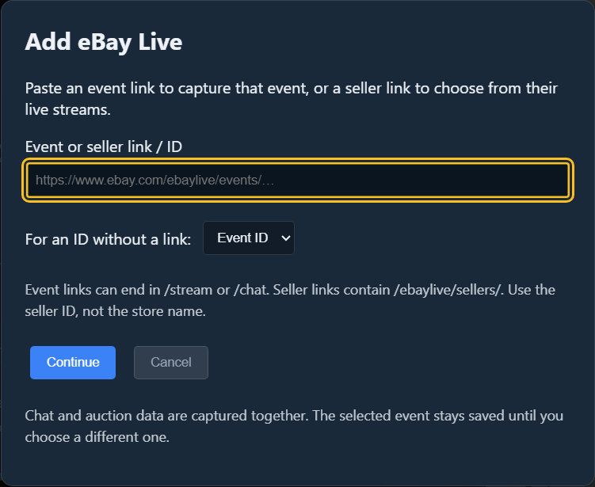
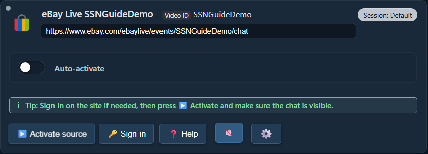
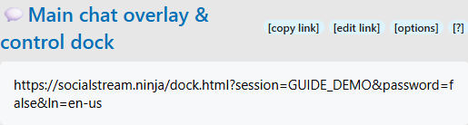

Fuente = el chat que capturas. Panel de chat (Dock) = la ventana de SSN que muestra esos mensajes. OBS = donde los añades a tu transmisión.
Elige una forma de usar SSN. No necesitas las dos.
1. Abre SSN y actívalo
Descarga la aplicación de escritorio para tu equipo, instálala y abre Social Stream Ninja.
Ve a Fuentes y ajustes (Sources and Settings). Si el panel derecho indica Servicio desactivado (Service Disabled), haz clic una vez. Debería indicar Servicio activo (Service Active).
Instala Social Stream Ninja desde Chrome Web Store en Chrome o Edge.
Haz clic en Extensiones (el botón con forma de pieza de rompecabezas) del navegador y, después, en Social Stream Ninja. Fíjala para encontrarla fácilmente la próxima vez.
Si el menú indica Extensión desactivada (Extension Disabled), haz clic una vez. Debería indicar Extensión activa (Extension active).
{kind=link}
¿No se abre la aplicación de escritorio?
Sigue las instrucciones para abrirla en Windows, macOS o Linux. Instalar SSN no conecta un chat automáticamente.
2. Añade el chat que quieres leer
En Fuentes y ajustes (Sources and Settings), elige tu plataforma con los botones de la izquierda. Desplázate por la lista si hace falta.
Ejemplo con eBay Live: haz clic en eBay Live, pega el enlace a tu evento en directo y haz clic en Continuar (Continue).
{kind=link}

Tu nueva fuente aparece en Fuentes añadidas (Added Sources). Haz clic en Activar fuente (Activate source). Si el sitio te pide iniciar sesión, usa Iniciar sesión (Sign-in) y vuelve a activar la fuente.
{kind=link}

¿Dónde están esos controles?

En el mismo navegador donde instalaste la extensión, abre la página del chat de la transmisión. Inicia sesión en la plataforma si hace falta y deja esa pestaña abierta.
Ejemplo con eBay Live: abre tu evento en directo en eBay y comprueba que el chat sea visible. Un anuncio de producto o la tienda de un vendedor no es el chat en vivo.
Con este método no añades una fila de fuente en SSN: la extensión captura las páginas de chat compatibles que abras.
Comprueba: debes ver mensajes nuevos en la página de chat de la plataforma original.
¿Usas otra plataforma?
Usa el enlace del chat en vivo o del chat en ventana independiente de esa plataforma. Busca las instrucciones de configuración de tu plataforma.
3. Abre tu panel de chat de SSN
Vuelve a los ajustes de SSN a la derecha de la aplicaciónhaciendo clic en el icono de su extensión del navegador. Busca Superposición principal de chat y panel de control (Main chat overlay & control dock).
Haz clic en el enlace largo que hay debajo de ese encabezado. Se abrirá tu panel de chat. Usa copiar enlace (copy link) cuando necesites pegarlo en otro lugar.
{kind=link}

Pide a alguien que envíe un mensaje nuevo al chat o envíalo tú desde la plataforma original. Debería aparecer en el panel de SSN.

¿Aparece el chat aquí? Ya tienes conexión. Haz que esto funcione antes de cambiar los ajustes de texto a voz o de OBS.
Mi panel de chat está vacío
Comprueba que SSN esté activo, que la fuente esté funcionando y que su chat sea visible. Envía un mensaje nuevo ; es posible que los mensajes antiguos no se vuelvan a mostrar. Abre el enlace del panel desde esta misma aplicación o extensión de SSN, no desde una captura ni desde otra sesión.
Si hace falta, usa Generar un mensaje de prueba (Trigger a fake test message) en los ajustes de SSN. Si aparece, pero el chat real no, revisa la fuente. Si no aparece ninguno, comprueba el enlace del panel y la conexión.
4. Opcional: lee el chat en voz alta
Sí: la función de texto a voz puede leer el chat entrante automáticamente, mensaje por mensaje. eBay no necesita su propia función de texto a voz. SSN ya debe estar recibiendo el texto.
Vuelve a los ajustes de SSN y, debajo del enlace principal de tu panel, despliega Mensaje — Texto a voz (Message — Text to Speech). Activa Activar texto a voz en el panel (Enable TTS in dock):

Desplázate hacia abajo en esa sección. Elige Piper TTS en Proveedor de texto a voz (TTS Service Provider) y selecciona una voz. No necesitas una clave de API ni una cuenta de pago.

Copia otra vez el enlace principal de tu panel de chat. El enlace actualizado incluye texto a voz. Un enlace que hayas copiado antes no incorpora los nuevos ajustes.
Solo quiero escucharlo en mi equipo
Abre el enlace actualizado del panel y envía un mensaje nuevo al chat. Haz clic dentro de la página si el navegador bloquea el audio. Puedes terminar aquí si no necesitas OBS.
5. Añade tu panel de chat a OBS
- En tu escena de OBS, busca Fuentes (Sources). Haz clic en + → Navegador (Browser). Ponle el nombre SSN Chat y haz clic en Aceptar (OK).
- Sustituye la URL predeterminada por el enlace del panel que acabas de copiar. Deja Archivo local (Local file) sin marcar.
- Para usar texto a voz, marca Controlar audio vía OBS (Control audio via OBS). Haz clic en Aceptar (OK).

Arrastra el cuadro de chat en la vista previa de OBS para moverlo. Arrastra una esquina para cambiar su tamaño. Si ya añadiste esta fuente, abre sus Propiedades (Properties) y sustituye la URL anterior.
Quiero la voz sin mostrar el chat
Mantén activada la fuente de navegador, pero colócala detrás de una fuente opaca de cámara o juego, o muévela fuera del lienzo. No desactives su icono del ojo ni la descargues mientras necesites su audio.
¿Y un panel de navegador personalizado de OBS?
Es un panel de control para ti. Es distinto de la Fuente de navegador (Browser Source) de la escena mencionada arriba. Empieza con esa fuente para capturar el audio de texto a voz. Más información sobre paneles y superposiciones.
6. Comprueba el sonido antes de transmitir
- Envía otro mensaje al chat. Comprueba si se mueve el medidor de SSN Chat en el Mezclador de audio (Audio Mixer).
- Para escucharlo tú también, abre Editar → Propiedades de audio avanzadas (Edit → Advanced Audio Properties). Configura esa fuente en Monitorización y salida (Monitor and Output).
- Haz una grabación corta en OBS y reprodúcela. Deberías oír el mensaje una sola vez.
Chat visible + voz en la grabación = todo listo. Tu transmisión debe usar el audio de OBS para que los espectadores lo oigan; SSN no añade sonido automáticamente a una transmisión independiente desde el teléfono.
¿No se oye o se oye dos veces?
Si el medidor no se mueve: comprueba la URL nueva, el interruptor de texto a voz, la descarga de la voz y «Controlar audio vía OBS». En OBS, empieza con Piper en lugar de las voces del sistema.
Si el medidor se mueve, pero la grabación no tiene sonido: comprueba que no esté silenciado y revisa la asignación de pistas de grabación.
Si lo oyes dos veces: cierra el panel o navegador adicional que esté hablando, o desactiva su texto a voz. Evita grabar a la vez la fuente de OBS y una segunda copia del sonido de monitorización.
Comparar voces y solucionar problemas de texto a voz · Ayuda sobre fuentes de OBS · Ayuda de audio de OBS
La próxima vez que transmitas
Abre SSN, activa tu fuente (o abre la pestaña del chat) y abre OBS. Si eBay genera un enlace de evento nuevo para la siguiente transmisión, actualiza la fuente con ese evento. Sigue usando el enlace del panel de la misma sesión de SSN.
Más opciones avanzadas
Otros proveedores de voz · Ejecutar tu propio servidor de texto a voz · Todas las guías